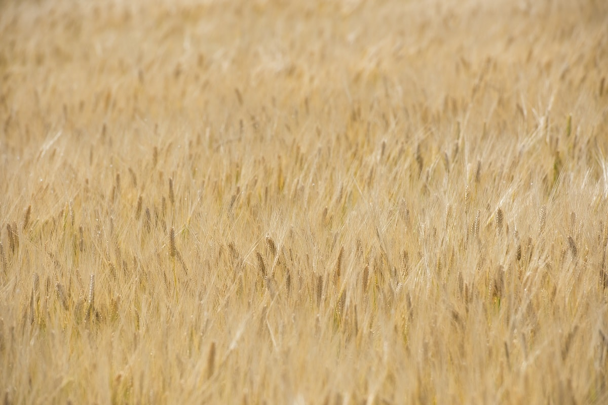
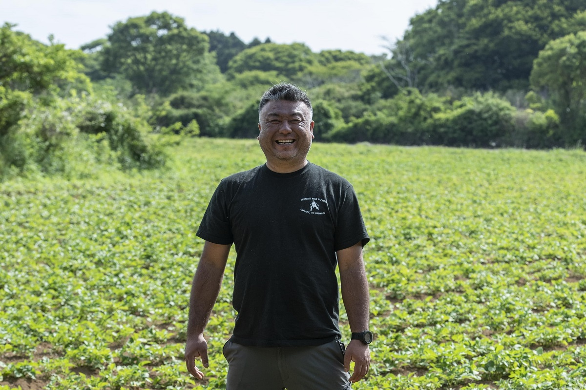
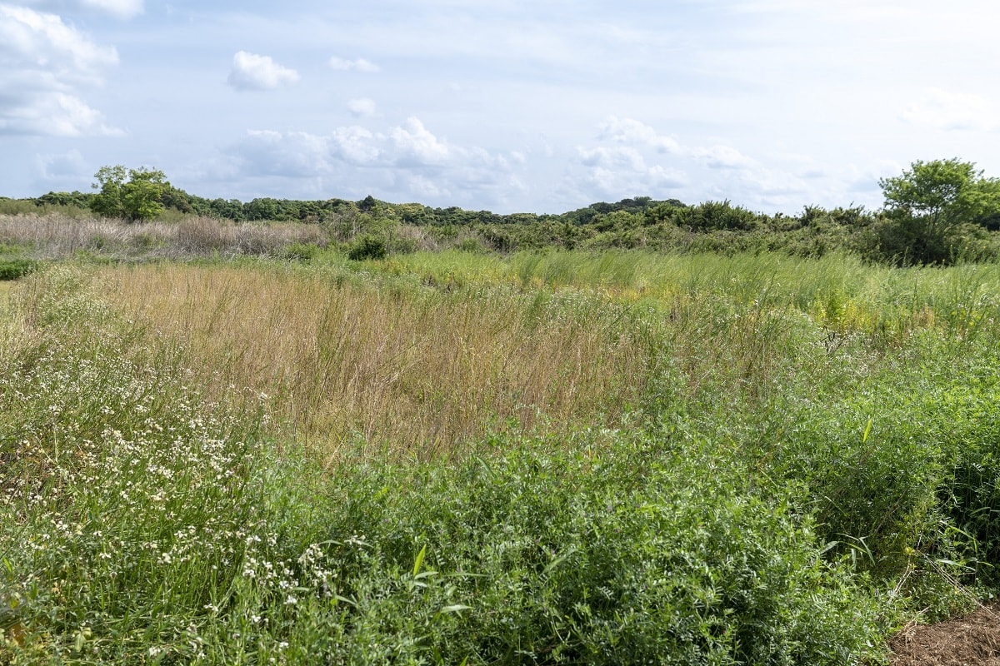
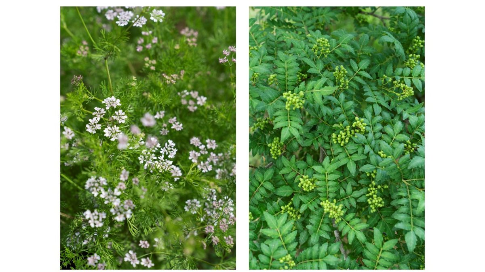
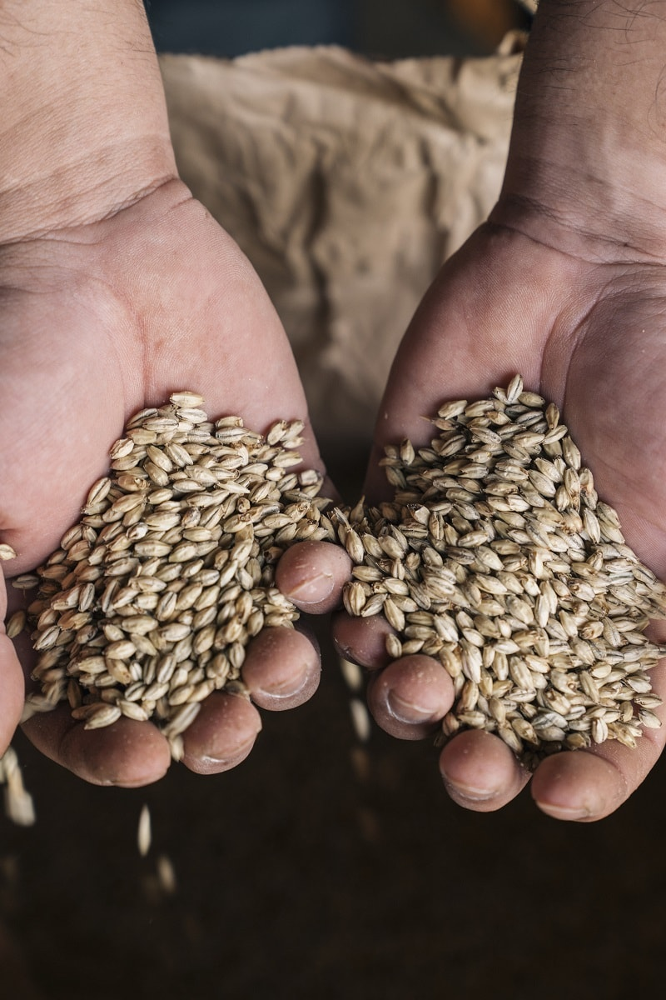
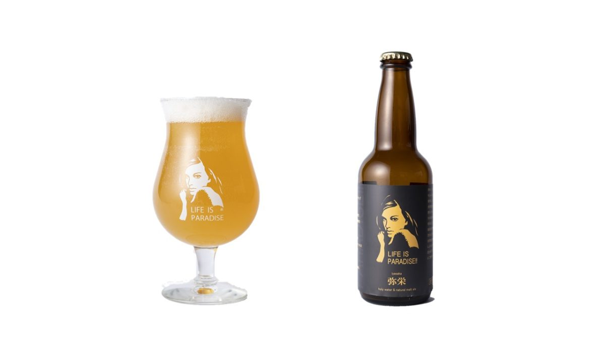
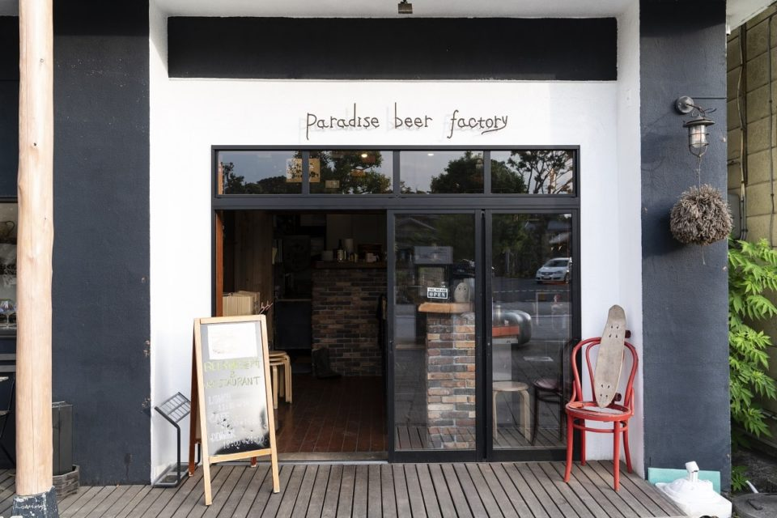
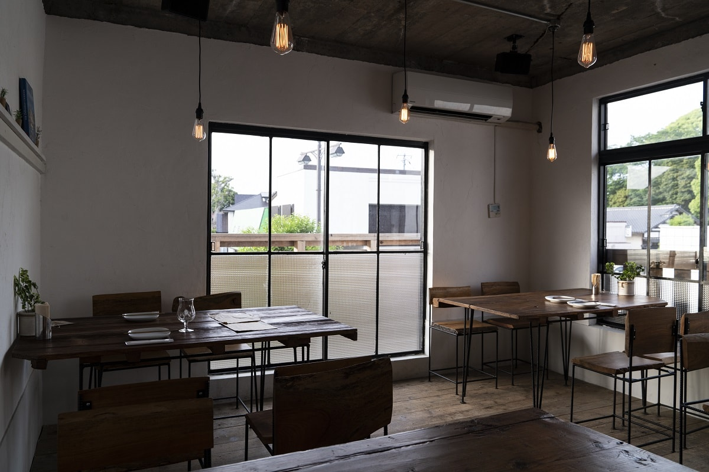

Префектура Ибараки · Касима · пиво
Paradise Beer Factory: фермер из Касимы варит пиво из ячменя, который вырастил сам

Винодел, который сам растит виноград, никого не удивит. А пивовара, который сам растит ячмень, не найти даже в Портленде, мировой столице крафтового пива. В Касиме такой есть: он выращивает зерно без удобрений и химии и варит из него пиво.
Фермер
Пиво начинается с поля
В американском Портленде больше 70 пивоварен, и город считают главной пивной столицей мира. Но даже тамошние пивовары удивились бы: никто из них не выращивает ячмень сам. Paradise Beer Factory в городе Касима на юго-востоке префектуры Ибараки делает именно это. Пивоварня входит в сельскохозяйственное объединение Kashima Paradise, и весь путь от посева ячменя до готового пива проходит здесь в одних руках.

Основатель пивоварни переехал в Касиму в 2008 году, чтобы заняться сельским хозяйством. Перелом случился после встречи с Акинори Кимурой, фермером, которого в Японии знают по «чудесным яблокам»: он вырастил яблоневый сад без удобрений и пестицидов. С тех пор основатель Paradise Beer Factory работает по тому же методу природного земледелия. На поле не вносят ни удобрений, ни компоста, ни пестицидов, ни гербицидов.
Его девиз звучит так: хорошее пиво начинается с хорошего ячменя. Обычно пивоварня и поле живут отдельно, а солод покупают готовым. Ячмень выращивают огромные хозяйства с крупной техникой, поэтому он дешёв. В 2019 году солод в Японии стоил около 150 иен за килограмм, а у Paradise Beer Factory одна только переработка своего зерна обходилась в 300 иен за килограмм.
«Если прибавить к переработке стоимость самого ячменя, себестоимость выходит в пять раз выше. Если подумать, понятно, почему другие пивовары за это не берутся»
основатель пивоварни

И всё же он растит зерно сам. Ячмень составляет около 97% сырья для пива, но Япония почти весь его ввозит: на отечественный пивоваренный ячмень приходится лишь 7% рынка. В Kashima Paradise ради вкуса готовы тратить и время, и деньги. Когда основатель ещё работал в сельскохозяйственной компании, он объездил мир и побывал у фермеров, чью продукцию признавали лучшей в мире. У всех было общее: они сами растили сырьё, сами его перерабатывали и сами продавали, и любой работник гордился своим товаром. А там, где делают самое вкусное, природе меньше всего вреда.
Ячмень нужен и самому полю. В первый год на участке сажают сою: на её корнях живут клубеньковые бактерии, и баланс микробов в земле возвращается к естественному. На следующий год там же сеют ячмень. Его глубокие корни разрыхляют почву, и поле становится мягким, а вода уходит лучше.

Пиво
Полтора года от семени до бокала
Ячмень сеют осенью, а убирают в июне следующего года. Потом зерно около трёх месяцев отдыхает в холодильнике, и в октябре его начинают перерабатывать. От посева до готового пива проходит больше полутора лет.

Ещё в начале своего пути фермер мечтал сделать «главное из ста лекарств». Так назвали хмельные напитки в китайской исторической хронике «Ханьшу», написанной около двух тысяч лет назад.
«Когда пьёшь, всегда немного чувствуешь вину. Но когда писали эту книгу, пестицидами и удобрениями почти не пользовались. Я подумал: если сделать напиток из того, что выросло на поле природного земледелия, в условиях, близких к тем временам, может получиться современное лекарство от ста болезней»
основатель пивоварни
С этой мыслью он нашёл в соседней префектуре Тиба сакэварню, которая берёт только рис без пестицидов и запускает брожение по старинному методу кимото, из воды, риса и кодзи. Фермер попросил сварить сакэ из своего риса, высушенного на солнце, и получил нефильтрованное непастеризованное сакэ. Из его природных дрожжей Paradise Beer Factory варит белый эль 5DAUGHTERS и сезон «Иясака Парадайс».
Пиво он тоже сначала хотел заказать той же сакэварне, но её глава предложил другое: варите сами. Четыре года ушло на учёбу. В 2016 году пивоварня получила лицензию, а всего через два года работы на своём ячмене, в 2018 году, сезон «Иясака Парадайс» взял серебро International Beer Cup, одного из пяти крупнейших пивных конкурсов мира.

«Иясака» это древнее японское слово из синтоистских молитв, пожелание процветания. В округе пивоварни вместо привычного «кампай» поднимают бокалы со словом «иясака!». Это счастливое имя и досталось пиву.
Сырьё у «Иясаки» такое: ячмень природного земледелия, 100%. Для варки берут священную воду из соседнего святилища: её жёсткость 95, намного выше, чем где-либо ещё в городе, и для эля, говорят, это идеально. Органический хмель выращивают вместе с фермером под Ванкувером, на западном побережье Северной Америки, где климат подходит хмелю лучше всего. Аромат добавляет сансё без химии. Пиво получается мягким и хорошо идёт к еде.
Ресторан
Пивоварня у святилища Касима-дзингу
Пивоварня и ресторан при ней стоят на главной дороге к святилищу Касима-дзингу. Почти весь интерьер и мебель основатель и его команда сделали своими руками. Поэтому спинки и сиденья стульев не похожи друг на друга, и в этом весь шарм. Буклеты и дизайн футболок тоже его работа.


В 2026 году на официальном сайте можно записаться на пивную экскурсию, а также на экскурсию с джелато и на день работы на ферме.
«Не хочу ради одного отказываться от другого»
основатель пивоварни
Вкусно, полезно для земли и весело: «рай», где всё это собрано вместе, нашёлся в Касиме.
Paradise Beer Factory
- Адрес
- префектура Ибараки, Касима, Кютю, 1-5-1
- Телефон
- +81 299-77-8745
- Часы работы
- обед 11:30–14:00, кафе 14:00–16:00, ужин 18:00–21:00
- Выходные
- понедельник, вторник, среда (в праздник открыто только на обед, выходной на следующий день; бывают внеплановые выходные из-за работы в поле)
- Сайт
- paradisebeer.jp
Фото: Ацуси Ямахира.